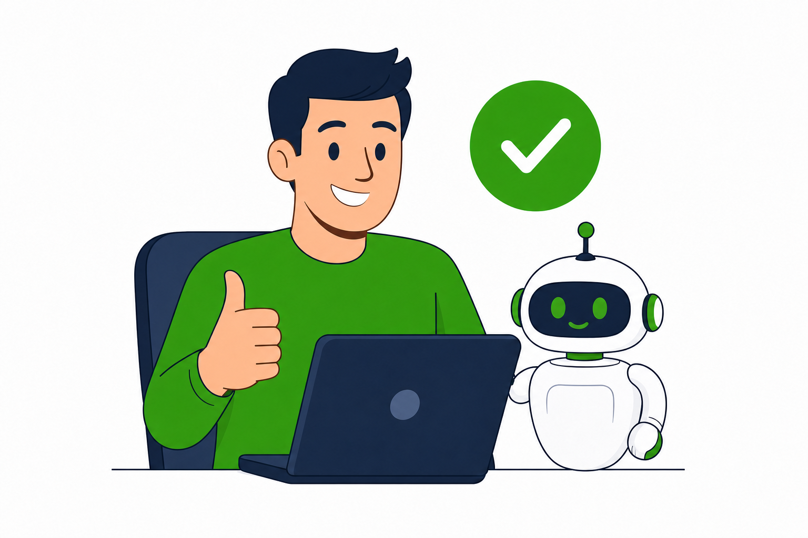
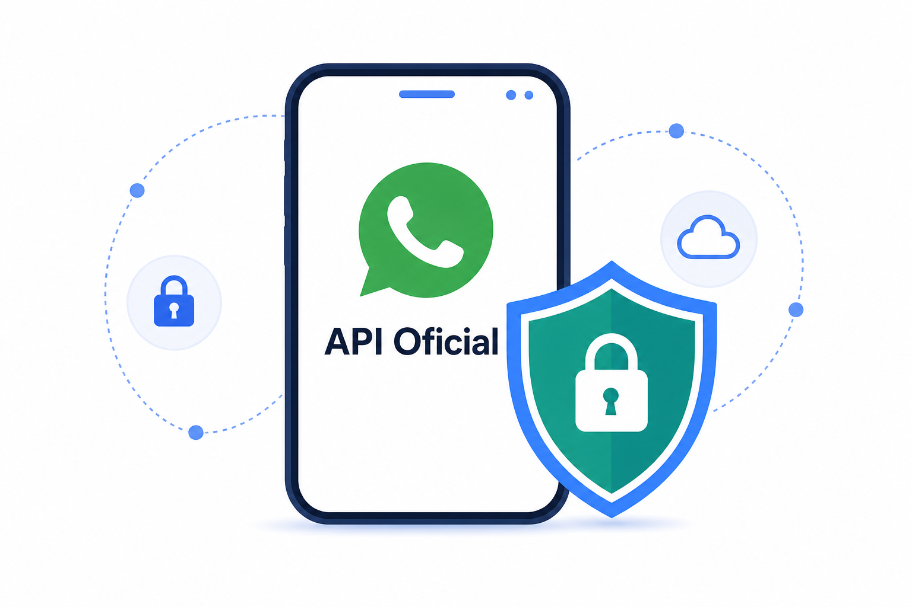

- Mensagens espalhadas
- Prazos esquecidos
- Respostas repetitivas
- Documentos no e-mail
- Clientes esperando
Organize seu escritório contábil pelo WhatsApp.
Automatize atendimentos, documentos e prazos com IA, mantendo sua operação organizada 24 horas por dia.
- API Oficial do WhatsApp
- Implementação rápida
- Suporte humano especializado
‹GT
GTchat Contabilidadeonline
◉ ⋮
Hoje
☺
Mensagem
⌕IA atendendoem segundos
API OficialWhatsApp
Escritórios que
já simplificam o atendimento
já simplificam o atendimento
Mais tempo para
o que importa
o que importa
Menos retrabalho
e esquecimentos
e esquecimentos
Clientes sempre
bem atendidos
bem atendidos
Crescimento com
processos escaláveis
processos escaláveis
Do caos no WhatsApp à eficiência com IA
Centralize, automatize e entregue uma experiência incrível para seus clientes.
→

- Tudo organizado em um só lugar
- Lembretes e prazos automáticos
- IA responde e qualifica
- Documentos solicitados no WhatsApp
- Atendimentos 24/7 com qualidade
Benefícios para o seu escritório contábil
Mais produtividade, organização e clientes satisfeitos.
Foco no que gera valor
Automatize tarefas repetitivas e libere sua equipe para atividades estratégicas.
Clientes mais satisfeitos
Atendimento rápido, claro e disponível 24/7 no canal que eles preferem.
Prazos sob controle
Lembretes automáticos de obrigações e documentos para você e seus clientes.
Documentos na hora certa
Solicite, receba e organize documentos sem sair do WhatsApp.
Dados para decisões
Relatórios que mostram atendimentos, tempo de resposta e muito mais.
Fluxos que simplificam o dia a dia
Cliente chama
no WhatsApp
Dúvida, solicitação
ou informação.
IA atende
e qualifica
Responde, entende
e coleta dados necessários.
Executa o fluxo
ideal
Solicita documentos,
consulta prazos e dados.
Entrega a resposta
na hora
Informe, boleto, cópia,
comprovante ou orientação.
Encaminha para
humano
Atendimento humanizado
quando o cliente precisa.
Tudo registrado
e mensurado
Relatórios e insights para
melhorar sempre.
Resultados que você pode esperar
−40%no tempo gasto com
atendimentos repetitivos
atendimentos repetitivos
+2hde produtividade por
colaborador por dia
colaborador por dia
+35%na satisfação dos
seus clientes
seus clientes
24/7atendendo clientes,
mesmo fora do horário
mesmo fora do horário

Segurança e confiabilidade
com a API Oficial do WhatsApp
- Conexão oficial e segura com o WhatsApp
- Proteção de dados e conformidade com a LGPD
- Infraestrutura em nuvem com alta disponibilidade
- Histórico, auditoria e permissões por usuário
Perguntas frequentes
Não. Cenário atual será analisado durante implantação.
Prazo depende de fluxos, integrações e volume operacional.
Não. IA automatiza tarefas e encaminha situações necessárias.
Integrações dependem de API disponível no sistema utilizado.
Plano será definido conforme estrutura e necessidade.
Sim. Acesso, permissões e histórico seguem controles definidos.
Pronto para transformar o WhatsApp
do seu escritório?
Agende uma demonstração gratuita e veja o GTchat em ação.